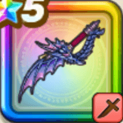

水竜の短剣
攻略班 9.0点 / カオスエッジハードラックラッシュジャッジパラライズマール・デ・ドラゴーン海竜の審判必中の極意
くわしい特徴
【レベル別習得スキル】 Lv1【魔人】攻撃力+5 Lv1【ニンジャ】さいだいHP+10 Lv1【二刀】二刀流時の斬撃・体技によるダメージ+5% Lv10カオスエッジ（消費MP：9）混沌の剣技で敵1体に威力175％の斬撃ダメージを与えたまに混乱させる Lv15ハードラックラッシュ（消費MP：37）敵1体に威力250%の斬撃ダメージを3回与え、不運【弱化】を付与する。この効果は弱化効果を受ける時の成功率が1.5倍になる Lv20ジャッジパラライズ（消費MP：45）敵全体にまれに直撃する威力580%の斬撃ダメージを与え麻痺させる。麻痺している敵には威力が1,000%にUPする Lv30マール・デ・ドラゴーン（消費MP：59）敵全体に敵ごとに有効なバギかザバ属性の550%斬撃ダメージ(メタル系に+50)を与えまれに麻痺を付与。行動順が早いほど弱化成功率UP(最大1.2倍) Lv35物質系へのダメージ+5% Lv40マシン系へのダメージ+5% Lv45攻撃力+12 Lv50海竜の審判（消費MP：最大MPの2%）戦闘開始時に最大MPの2%を消費し、まれに敵全体を戦意喪失 Lv2にする。海賊装備時敵全体を戦意喪失 Lv2にする(効果1ターン) Lv50必中の極意（消費MP：8）戦闘開始時に自身に斬撃・体技ダメージがガードやみかわしされなくなる効果を付与する(効果4ターン) 【限界突破スキル】 1凸スキルの斬撃・体技ダメージ+7% 2凸スキルの斬撃・体技ダメージ+7% 3凸スキルの斬撃・体技ダメージ+7% 4凸スキルの斬撃・体技ダメージ+7%